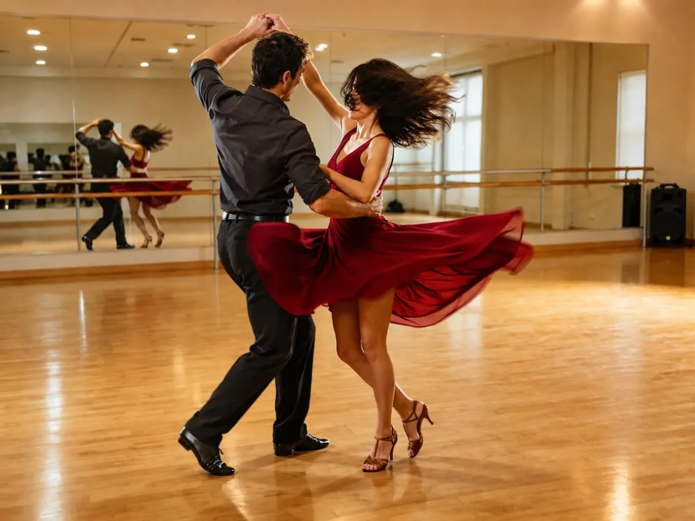

Dansschool in Nijmegen: de beste school per dansstijl
Bijgewerkt op 21 november 2026.
Nijmegen heeft een dansschool voor bijna elke stijl, van ballet voor peuters tot Cubaanse salsa en breakdance. Weet je wat je wilt leren, dan vind je hier per stijl de beste plek om te beginnen.

Zo hebben we gekozen
We lazen in november 2026 de websites van de dansscholen in onze bedrijvengids. Bijna overal kun je een proefles doen. Bij salsa en Latin hoef je meestal geen partner mee te nemen.
Stijldansen en de openingsdans
Danscentrum Vermeulen: al ruim vijftig jaar
Aan de Bijleveldsingel leren Nijmegenaren al ruim vijftig jaar dansen. Je volgt stijldansen van beginner via brons, zilver en goud tot topklasse, met aandacht voor techniek en gezelligheid.
Ga je trouwen, dan oefen je hier je openingsdans. Er zijn ook lessen hiphop en streetdance.
Goed voor: stellen die samen willen leren dansen.
Danszinnig: een eigen openingsdans
Zie je op tegen het eerste moment op de dansvloer? Annika van Danszinnig maakt met jullie een eigen choreografie op jullie favoriete nummer.
Die leer je in een paar lessen, met video's om thuis te oefenen.
Goed voor: bruidsparen die het spannend vinden.
Salsa, bachata en Latin
Salsa Cubana: Cubaanse salsa van een familiebedrijf
In een spiegelzaal aan de Tweede Walstraat, op tien minuten lopen van het station, leer je Cubaanse salsa van Dirk en zijn moeder Irene. Er zijn groepen van beginner tot gevorderd, en je hoeft geen partner mee te nemen.
Op vrijdagavond is er een dansavond. In de schoolvakanties zijn er geen lessen.
Goed voor: wie Cubaanse salsa wil leren.
Passion With Flow: salsa, bachata, kizomba en zouk
Via het steegje achter de bank aan de Mariënburg loop je de trap af naar deze dansschool, onder restaurant Humphreys. Je leert er salsa in LA-stijl, bachata sensual, kizomba, Braziliaanse zouk en West Coast Swing.
De lessen zijn op doordeweekse avonden, en op vrijdag is er vanaf tien uur een social.
Goed voor: wie verschillende Latin-stijlen wil proberen.
Salsa Tipica: salsa en West Coast Swing in De Vasim
In het Vasim-complex heeft deze school een eigen danszaal met een bar en een zithoek. Je volgt er wekelijks salsa, bachata en West Coast Swing, op verschillende niveaus.
Een danspartner hoef je niet mee te nemen.
Goed voor: wie na de les nog wil blijven hangen.
Hiphop en urban
MovingMatters: hiphop, breaking en house
Bij deze hiphopdansschool draait alles om urban dans: hiphop, afro, breakdance, locking en house. Oprichter Marthe Weijers won onder meer Nederlandse titels en de World Cup.
Naast de hoofdlocatie in Oost zijn er lessen in Nijmegen-Noord en Lent. Een proefles kan.
Goed voor: tieners en volwassenen die urban willen dansen.
Ballet en dans voor kinderen
Balletstudio Danielle: ballet vanaf twee jaar
In de Krayenhoff Kazerne wordt al zo'n 25 seizoenen les gegeven, van peuters vanaf twee jaar tot volwassenen. Je kiest uit klassiek ballet, modern/jazz, streetdance, flamenco en bodydance.
Je parkeert bij de kazerne, en een proefles kan.
Goed voor: kleine kinderen die van ballet dromen.
De Studio: dans in het centrum sinds 1996
In de Bottelstraat geeft De Studio al sinds 1996 dans- en conditielessen. Het aanbod loopt van kleuterdans vanaf 3,5 jaar tot ballet, moderne dans, jazz, hiphop en commercial dance.
Er zijn ook lessen voor volwassenen en senioren, en een tweede locatie bij De Klif in Nijmegen-Noord.
Goed voor: kinderen en volwassenen in het centrum.
Paaldansen en dansfitness
Artistic Movements: paaldansen en aerial
In het gebouw van Triavium werken vrouwen samen aan kracht, lenigheid en zelfvertrouwen. Je kiest uit paaldansen in sportieve of sexy stijl, twerk en dancehall, aerial hoop en aerial yoga.
Je kunt er ook een kinderfeestje of bedrijfsuitje houden.
Goed voor: vrouwen die iets nieuws willen proberen.
Vrij dansen, zonder pasjes
Ecstatic Dance Nijmegen: dansen zoals jij wilt
Bij Ecstatic Dance beweeg je op blote voeten precies zoals jij wilt, zonder dat iemand je iets voordoet. Er wordt niet gepraat, telefoons gaan uit en alcohol blijft buiten de deur.
Ervaring is niet nodig.
Goed voor: wie wil loskomen zonder te hoeven presteren.
Heeldanserij: biodanza op vrijdagmorgen
Bij biodanza beweeg je op zorgvuldig gekozen muziek, in contact met anderen. Danservaring of een goede conditie heb je niet nodig.
Andrea Geurts begeleidt op vrijdagmorgen een weekgroep in Roomsch Leven.
Goed voor: wie rustig wil beginnen.
Ook goed
- ID Dance aan de Zijpendaalstraat: drie zalen, van peuterdans tot breakdance en zumba, en ook lessen in Lent.
- Amanné Caribisch Centrum: sinds 1983 salsa, bachata, merengue en kizomba.
- Lindy What?: Lindy Hop, Solo Jazz en Charleston, gerund door vrijwilligers.
- SDVN Dance Fever: de dansvereniging voor studenten.
- Flex Dansstudio in Nijmegen-West: van peuterles tot dans voor vijftigplussers.
Meer achtergrond lees je in de beste dansscholen in Nijmegen.
Meer in onze gids sporten en zwemmen in Nijmegen.
Veelgestelde vragen
Waar leer je stijldansen in Nijmegen?
Bij Danscentrum Vermeulen aan de Bijleveldsingel, van beginner tot topklasse.
Waar leer je salsa in Nijmegen zonder partner?
Bij Salsa Cubana, Fusion Latina en Amanné aan de Tweede Walstraat, Passion With Flow aan de Mariënburg en Salsa Tipica in De Vasim. Een partner meenemen hoeft niet.
Waar leer je een openingsdans in Nijmegen?
Bij Danscentrum Vermeulen, Danszinnig en de salsascholen. Danszinnig maakt een eigen choreografie op jullie nummer.
Waar kan mijn kind op ballet in Nijmegen?
Bij Balletstudio Danielle (vanaf twee jaar), De Studio (kleuterdans vanaf 3,5 jaar), ID Dance en Flex Dansstudio.